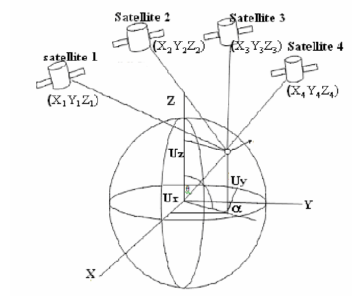

Mobile software engineers (iOS and Android), are normally not familiar with how GPS works, instead of just getting Lat/Lon readings, and doing geo operations with it, why not become familiar with how GPS works? 🤓

This will not be a lengthy article, it will be a chat between an iOS developer (Alex 👨🏻💻) and an electrical engineer (Sarah 👩🏼💻).
👨🏻💻: So what does GPS stand for?
👩🏼💻: It stands for (Global Positioning System).
👨🏻💻: Who created it? and what for?
👩🏼💻: The GPS project was launched in the USA back in 1973 due to limitations of old navigation systems.
👨🏻💻: I know it works without internet, but do I need cellular service to use GPS?
👩🏼💻: No.
👨🏻💻: How come it works without internet or cellular service?
👩🏼💻: You get readings from satellites, there are about 24 artificial satellites in 6 orbits.
👨🏻💻: So a mobile needs to connect to all of these?
👩🏼💻: Of course not, when you are stationary, you need to be exposed to 3 of them, when you are moving, you will need to be exposed to 4.
👨🏻💻: So how come it identifies me? and send me data?
👩🏼💻: The Satellites don’t identify you, they only emit synchronous pulses all the time everywhere.
👨🏻💻: And how does my mobile give me back the (latitude, longitude, and altitude)?
👩🏼💻: It compares the receive time of these pulses from each satellite, and use calculations to determine a point on earth, since the distance between these satellites is constant, and they have atomic clocks, the calculations will not be difficult.

👨🏻💻: The service is totally free, and I don’t have any subscription for GPS, how?
👩🏼💻: GPS is not the only service for (Global Navigation Satellite Systems), there are many like (GLONASS, BeiDou, Galileo…), there are other commercial solutions that I don’t know much about, there are a lot of details, I heard retail GPS receivers are designed to not work if the tracked object is moving fastly, you get the idea 🧐?
👨🏻💻: ah! yes.
👨🏻💻: What is the error margin?
👩🏼💻: It’s variable, but you can say between 15 to 50 meters, some commercial systems use other inertial systems to give more accurate estimations.
👨🏻💻: What is the minimum detectable value?
👩🏼💻: You mean the resolution? theoretically, as far as I know, it’s one inch, but practically it’s about 3 meters.
👨🏻💻: I once tried to use the GPS inside a big hospital, it didn’t serve any purpose, the readings were not accurate.
👩🏼💻: GPS does not work indoors.
👨🏻💻: But I saw some readings on my maps application.
👩🏼💻: it’s the last point that was read, some devices like Huawei also augment (Accel/Gyro) sensor data, to mimic a basic INS to give your readings inside buildings, but it’s not reliable.
👨🏻💻: And what is used for indoor navigation systems?
👩🏼💻: They use beacons and Bluetooth and other technologies, read about apple air tags!
👨🏻💻: You mentioned sensors, why can’t we use the basic sensors like accelerometer/gyroscope of the mobile to calculate the position?
👩🏼💻: when you “integrate” the acceleration twice, the error will explode fastly, and it will become useless in a short time of movement, even if this works, this will not give you an absolute position, and you have to deal with drifting and gimbal lock and a lot of complexities.
👨🏻💻: That was a lot of information, thank you.
👩🏼💻: Welcome!, see you soon.